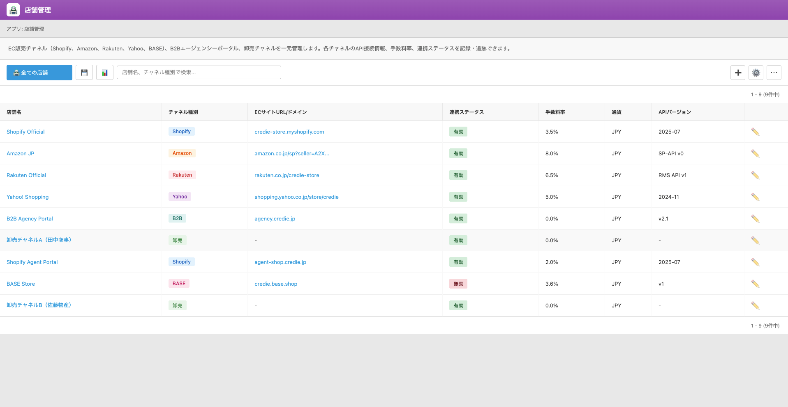

UI Spec
Channel Master
Version 1.0 / 作成日: ________
UI Screen Specification – 販売チャネルマスタ (Store Channel Master）
対象画面: 販売チャネル一覧 / 店舗（チャネル）詳細
想定利用者: EC担当、ロジスティクス担当、マーケティング担当（Credie 内部ユーザー）
1. 画面の目的（Purpose）
販売チャネルマスタ画面は、EC 販売チャネル（Shopify, Amazon, Rakuten, Yahoo, BASE）、
B2B エージェンシーポータル、卸売チャネルなど、すべての販売チャネルを一元管理するためのマスタです。
- 各チャネルの「種別」「接続URL / ドメイン」「API バージョン」「手数料率」「通貨」「連携ステータス」を統一管理する。
- Orders App での注文元判定（どのチャネルからの注文か）の基盤情報となる。
- 売上分析・チャネル別利益分析のキー（チャネル種別・店舗名）として利用する。
2. ユーザーストーリー（User Stories）
2.1 EC担当
- 新しく Shopify ストアや Amazon 出店を追加した際、店舗管理マスタで新規チャネルレコードを作成する。
- チャネルごとの手数料率（プラットフォーム手数料やマーケットプレイス利用料）を登録しておき、月次の粗利計算に利用する。
- API 仕様変更があった場合、「API バージョン」フィールドを更新して連携の整合性を把握する。
2.2 ロジスティクス / 運用担当
- どのチャネルがどの倉庫（Store App）から出荷されるかを設定する（将来的に紐づけフィールド追加を想定）。
- 連携ステータスが「無効」のチャネルは新規注文取込対象から外す運用を行う。
2.3 マーケティング / 経営管理
- チャネル種別（Shopify / Amazon / B2B / 卸売 など）ごとの売上・手数料コストを分析するための基礎マスタとして利用。
3. 機能概要（Functions）
- チャネル（店舗）レコードの一覧表示・検索・フィルタ・ソート
- 新規チャネル登録・既存チャネルの編集
- 連携ステータス（有効 / 無効）の管理および一覧での表示バッジ
- CSV エクスポートによるチャネルマスタの外部出力
- 将来的に Store App（倉庫マスタ）との紐づけフィールドを追加できる構成
4. 画面レイアウト（Layout）
4.1 一覧画面 – 店舗管理
店舗管理一覧画面では、各販売チャネル（Shopify 本店、Amazon JP、Rakuten Official、B2B ポータル、卸売チャネルなど）を行単位で表示します。
上部のビュー切替・検索・絞り込みは標準 Kintone コンポーネントを使用します。
| 項目名 | 説明 |
|---|
| 店舗名 |
チャネルを識別しやすい名称。
例: Shopify Official, Amazon JP, Rakuten Official, B2B Agency Portal など。
クリックで店舗（チャネル）詳細画面へ遷移。
|
| チャネル種別 |
チャネルのカテゴリ。
例: Shopify / Amazon / Rakuten / Yahoo / BASE / B2B / 卸売 など。
一覧では色付きバッジで表示し、視認性を高める。
|
| ECサイトURL / ドメイン |
対象チャネルの EC サイトURL またはドメイン。
例: credie-store.myshopify.com, rakuten.co.jp/credie-store, agency.credie.jp。
ブラウザでの動作確認やリンク共有に使用。
|
| 連携ステータス |
現在のシステム連携状態。
有効 / 無効。
有効: API 連携や注文取込を実施中。
無効: 一時停止・撤退したチャネル。赤色バッジで表示。
|
| 手数料率 |
販売金額に対するチャネル手数料の割合（%）。
例: 3.5%, 8.0%, 6.5%, 0.0% など。
月次粗利計算時に利用することを想定。
|
| 通貨 |
そのチャネルでの売上通貨。Phase 1 では JPY 固定。
将来的に多通貨対応を行う場合の拡張を想定。
|
| API バージョン |
連携に使用している API のバージョン情報。
例: 2025-07（Shopify API バージョン）, SP-API v0, RMS API v1, v2.1, -（API 連携なし）。
API 更新時の影響範囲確認や技術的なトラブルシュートに利用。
|
| 操作 |
編集アイコン（鉛筆）など、Kintone 標準のレコード操作。
詳細表示・編集・削除は基本的にこの操作から行う。
|
4.1.1 一覧画面のツールバー
- ビュー切替: 「全ての店舗」「有効のみ」など、ステータス別・種別別のビューを用意予定。
- 検索ボックス: 店舗名・チャネル種別・URL などを対象としたフリーテキスト検索。
- ＋ボタン: 新規チャネル（店舗）レコードを作成。
- その他設定アイコン: 標準の表示設定、一覧カスタマイズ用ボタン。
4.1.2 スクリーンショット

図1. 店舗管理 / チャネルマスタ一覧画面（Store Channel List）
4.2 店舗（チャネル）詳細画面（想定フィールド）
詳細画面では、一覧に表示している項目に加え、API 接続設定やメモなどの補足情報を管理できるようにします。
Phase 1 では以下のフィールド構成を想定しています。
| 項目名 | 説明 |
|---|
| 店舗ID | 内部管理用の一意 ID（自動採番またはコード）。他システム連携で使用。 |
| 店舗名 | チャネルの表示名。 |
| チャネル種別 | Shopify / Amazon / Rakuten / Yahoo / BASE / B2B / 卸売 など。 |
| ECサイトURL / ドメイン | フル URL またはドメイン。 |
| 連携ステータス | 有効 / 無効。新規チャネル追加時のデフォルトは「有効」。 |
| 手数料率 | % 表記。小数点第一位までを想定。 |
| 通貨 | Phase 1: JPY 固定。プルダウンで選択可能な設計にしておく。 |
| API バージョン | 接続中の API バージョン文字列。 |
| API 連携メモ | Webhook URL、認証方式、制限事項などのメモ（内部用）。 |
| 備考 | キャンペーン専用チャネルなど、運用上の注意点を記載。 |
5. お客様に確認したい点（Questions）
- チャネル種別の分類（Shopify / Amazon / Rakuten / Yahoo / BASE / B2B / 卸売）に過不足はありませんか？
- 手数料率は「プラットフォーム手数料のみ」か、それとも決済手数料も含めた総手数料として管理したいですか？
- API 連携のないチャネル（完全オフラインの卸売など）もこのマスタで管理する想定で問題ないでしょうか？
- 将来的に「紐づく倉庫（Store App）」や「ブランド」などの項目を追加する必要がありますか？
6. ビジネス影響（Business Impact）
- チャネル情報を一元管理することで、システム連携状況や手数料条件の把握が容易になり、運用ミスを削減できる。
- Orders App やレポート機能でチャネル別売上・粗利を分析しやすくなる。
- API バージョンを明示的に管理することで、仕様変更時の影響範囲を素早く把握できる。
7. Scope / Out of Scope
7.1 Scope
- 販売チャネル（店舗）のマスタ管理（CRUD）
- 手数料率・API バージョン・連携ステータスの保持
- Orders App・レポートから参照されるチャネル一覧の提供
7.2 Out of Scope
- API キー・シークレットなど機密情報の保管（別途 Secret 管理を想定）
- チャネル別キャンペーンや広告運用の詳細設定
- チャネルごとの在庫配分・自動引当ロジック（将来の拡張対象）
8. 開発メモ（Dev Notes）
- チャネル種別はマスタ値（ドロップダウン）として管理し、レポートや連携ロジックで利用しやすいようにする。
- 連携ステータスが「無効」のチャネルは、Orders App での新規チャネル選択肢から除外する運用を想定。
- API バージョンの形式は自由文字列だが、可能であれば「ベンダー推奨の表記」をガイドとしておく。
- 多通貨・複数国展開を見据え、通貨フィールドは将来拡張可能な実装にする。
- 他のマスタ（Product / Store / Partner）と同じ CSS（kintone-common-v2.css）およびレイアウトガイドラインに従う。